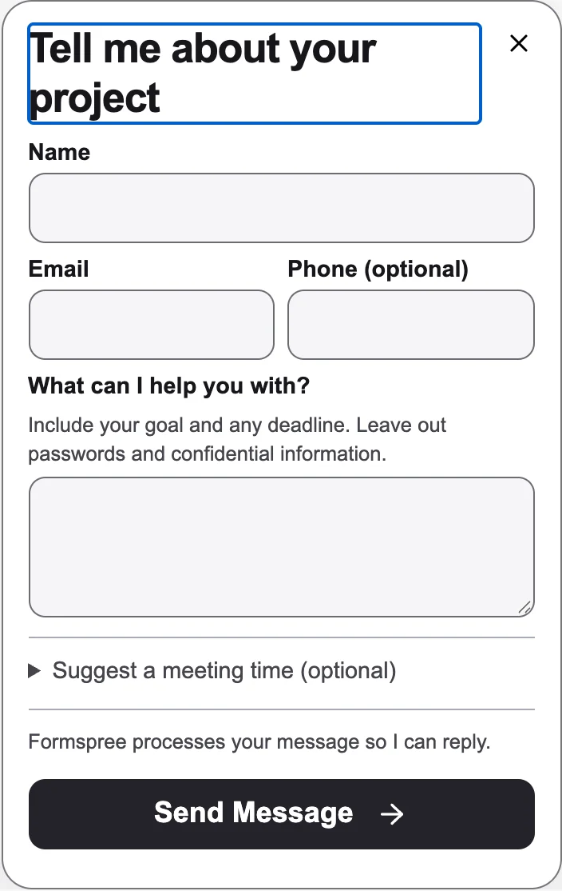

IT support across 14 clinics
I’ve worked in help desk, desktop, and field support at Advocate Health. My work covers hands-on setup, troubleshooting hardware and software, and supporting staff across multiple locations.
A website for members and guests
A community organization needed an introduction and two ways to get in touch. I built the site and a request flow that changes the questions and next steps based on the path the visitor selects.
Mobile form example
This portfolio’s contact form keeps labels visible, makes scheduling optional, and moves keyboard focus to the form when it opens. Pressing Escape closes it and returns focus to the opener.

A Mac app for comparing AI responses
I prototyped an app that assigns roles to assistants and displays their responses side by side, so a reviewer can compare their work in one place.
Work with me
Tell me what you want to improve and when you need it. I’ll reply to discuss scope, timing, and cost. Send a project inquiry · Upwork · LinkedIn
Experience
- Advocate Health IT Technical Support Administrator II
- 3+ years
- Brooksource IT Field Technician
- 10 months
- Illyria Capital Operations Analyst
- 3 months
- xCell Mobile / Planet Wireless General Manager
- 2 years, 7 months
- Milwaukee PC Technician
- 1 year
- Bemis Production Assembler
- 4 years
- Fountain Park Restaurant Assistant Manager
- 6 years
IT support across 14 clinics, including help desk, service desk, and desktop and field support.
Contract field technician supporting Advocate Aurora Health: equipment setup, hardware and software support, and upgrades.
Prepared financial reports, market research, and competitor profiles.
Oversaw sales, technical support, HR, and accounting, and mentored staff.
Diagnosed and repaired computers and performed hardware and software upgrades.
Production assembler.
Restaurant assistant manager.
Other projects
-
Independent project websitesPublic site live
I’ve designed and built static websites with responsive layouts and shared styles.
Project planning · Website development · Systems design
-
Community organization websiteActive initiative
I’m organizing a brotherhood around mentorship, professional growth, accountability, and community service. I built its public site and the application flow for members and guests.
Community building · Website development · Workflow design
-
Local AI workflowsIn development
I’m building a personal AI system with specialized assistants for research, planning, and follow-up, with workflows that coordinate their work.
AI tools · Process design · Automation
-
Personal Home LabActive
I configured a UniFi home network and use the setup to explore self-hosted services and Apple Home integrations through Homebridge.
Networking · Systems administration · Smart-home integration
-
Learning design toolkitIn development
I’m developing a private toolkit for organizing early-learning activities, planning lessons, and tracking progress. The work focuses on making learning plans easier to use and revise.
Learning design · Information organization · Progress tracking
-
Family AutomationIn development
I’m designing workflows that connect calendars, reminders, and shared routines so a household can coordinate tasks and schedules.
Scheduling · Workflow design · Documentation
-
RoundtablePrototype
I prototyped a local-first Mac app for assigning roles to AI assistants and comparing responses from different models.
Rapid prototyping · Native Mac development · Multi-agent workflows
Skills
- IT operations
- Help desk, computer imaging, hardware and software troubleshooting, and network support.
- Web and automation
- Static sites, mobile forms, technical documentation, and workflow prototyping.
- Operations and mentoring
- Staff supervision, training, and coordinating work with other teams.
Education
Associate of Applied Science in Cybersecurity
Lakeshore Technical College · December 2024
B.S. in Cybersecurity and Information Assurance
Western Governors University · In progress
Professional Certifications
CompTIA A+
April 14, 2026
About
I’m Vullnet Ameti. I work in IT support and help desk roles, and I’ve also managed businesses and worked on the production floor. I enjoy solving practical problems and connecting people who can help each other.
Practical experience. Personal connections. Follow-through.
Questions before reaching out
What can I get in touch about?
IT projects, technical problems, and opportunities to collaborate are welcome. A short note about your goal and anything you’ve already tried gives me a useful place to start.
Do I have to choose a meeting time?
You can send a message on its own or suggest a time in the form. If we decide to meet, we’ll confirm a time in a follow-up.
How do I know my message went through?
The form shows a confirmation after a successful submission. If it can’t confirm delivery, it keeps your draft and offers LinkedIn as an alternative.
Back to contact